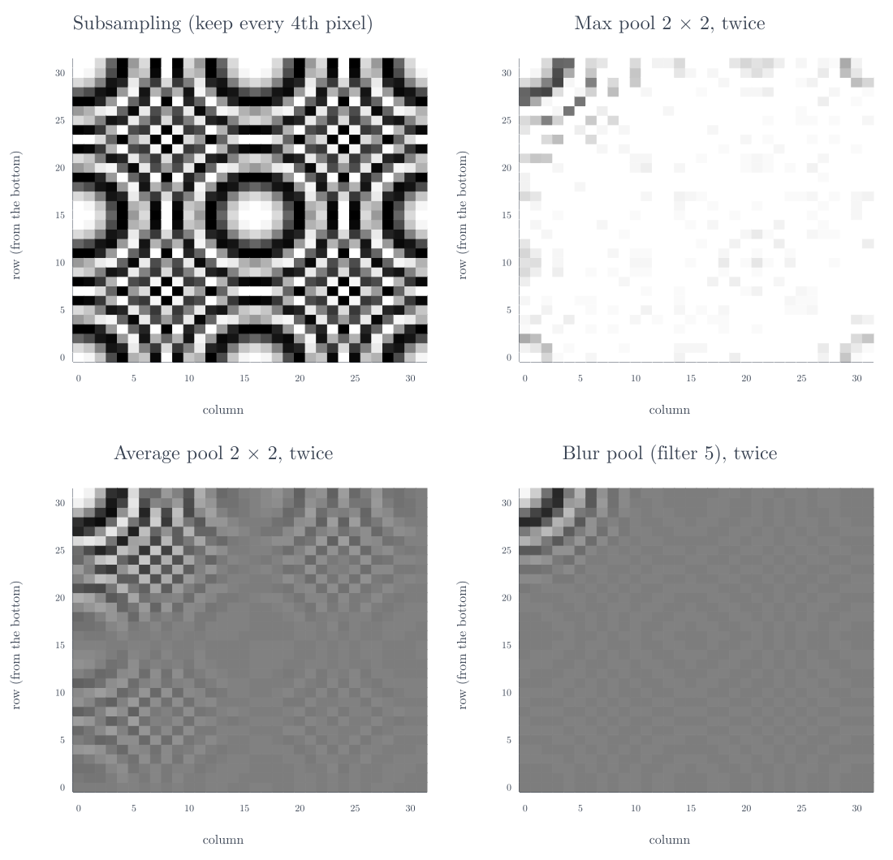
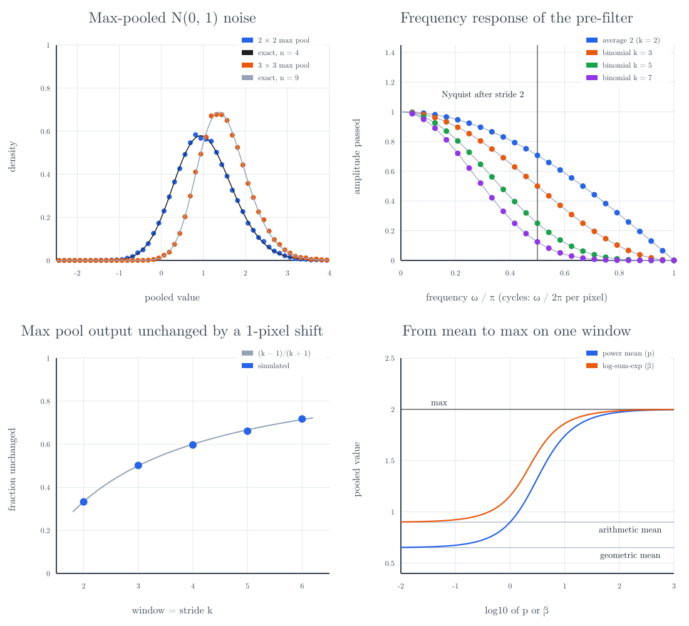
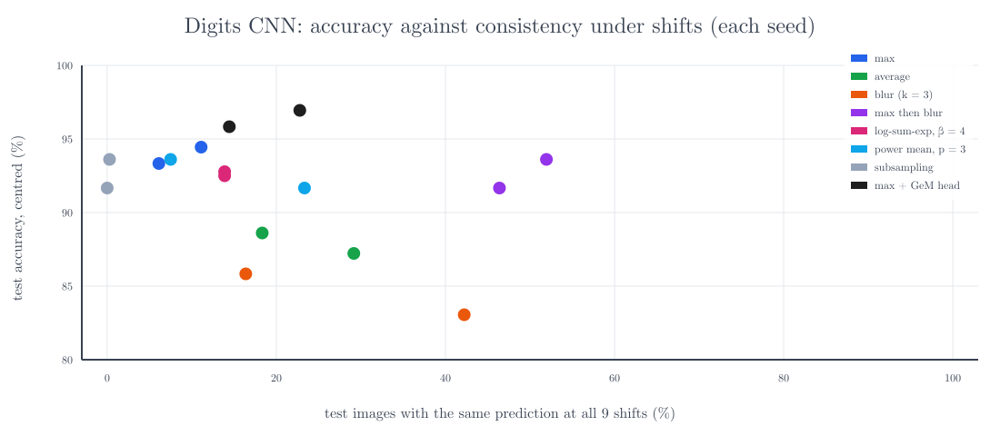

Pooling: From Mean to Max, Aliasing and Shift Consistency
Abstract
Pooling summarises each window of a feature map by one number. This report checks max, average, global and 3-D pooling against hand computations, and the routing of their gradients. It adds pooling between the two extremes: power means and log-sum-exp, which increase with their parameter from a mean to the maximum, and GeM with a learnable exponent. It also adds adaptive pooling to a fixed grid and anti-aliased blur pooling. Three exact results are verified. Max-pooled Gaussian noise follows the order-statistic density \(n\varphi\Phi^{n-1}\). A \(k\times k\) max-pool output survives a one-pixel shift of i.i.d. input with probability \((k-1)/(k+1)\), confirmed for \(k=2\) to 6. The binomial pre-filter of blur pooling passes amplitude \(\cos^{k-1}(\omega/2)\), confirmed to \(10^{-15}\). On a zone plate, plain subsampling aliases and max pooling saturates, while blur pooling removes what the coarse grid cannot hold. In a small digits CNN trained briefly on centred images, max pooling keeps its prediction under all nine one-pixel shifts for only 6–11% of the test images. Max pooling followed by a blur raises that to 46–52% at about the same centred accuracy.
The problem
Convolutional networks shrink their feature maps with pooling. A max pool keeps the strongest response in each window, and an average pool keeps the mean. Both have no parameters, and both are meant to make the network tolerant of small translations. Three questions are worth answering exactly. What do the operations and their gradients compute? Is there a useful family between mean and max? And how much translation tolerance does pooling really buy? The last question has a sampling-theory answer. Pooling with stride \(s\) is filtering followed by subsampling, and subsampling folds high frequencies onto low ones (Zhang, 2019; Azulay and Weiss, 2019).
This report replaces the original example examples/nn/0_foundations/0.2_reusable_layer_library/pooling.cpp. That example printed max and average pooling of small images with VALID and SAME padding, followed the gradients, checked global and 3-D pooling against reductions and measured how many pooled outputs survive a one-pixel shift. All of that is kept. The new functions are in datamunge/nn/pooling_variants.hpp.
The method
Max, average and their gradients
For a window \(w\) of \(n\) entries, max pooling returns \(\max_{i\in w}x_i\) and average pooling returns \(\frac1n\sum_{i\in w}x_i\). With SAME padding, border windows extend past the image. Max pooling ignores the padding, and average pooling divides by the number of real entries, not by \(n\). The gradient of max pooling is 1 at the arg-max of each window and 0 elsewhere, so it routes everything to one input. Average pooling spreads \(1/n\) to every entry. Global pooling is one window covering all of \(H\times W\). Adaptive pooling to an \(h_o\times w_o\) grid gives output row \(i\) the input rows \(\lfloor iH/h_o\rfloor\) to \(\lceil(i+1)H/h_o\rceil-1\), and likewise for columns.
Between mean and max
The power mean of non-negative entries,
is non-decreasing in \(p\) (Hardy, Littlewood and Pólya, 1934). It tends to the geometric mean as \(p\to0\), equals the arithmetic mean at \(p=1\) and tends to the maximum as \(p\to\infty\). Since the maximum is one of the \(n\) terms, \(\max_i x_i\,n^{-1/p}\le M_p\le\max_ix_i\). nn::power_mean_pool2d applies it to \(|x|\). nn::gem_pool2d is the global version with a clamp \(x\ge\epsilon\) and an exponent that may be learned (Radenović, Tolias and Chum, 2018).
Log-sum-exp pooling (Pinheiro and Collobert, 2015),
works for any sign. It lies between the mean (its limit as \(\beta\to0\), by Jensen's inequality) and the maximum, and \(\max_ix_i-L_\beta\le(\log n)/\beta\). Its gradient sums to 1 like max pooling's, but every entry receives a share. nn::logsumexp_pool2d subtracts each window's maximum before exponentiating, so large \(\beta\) does not underflow.
Pooling noise
If the entries are i.i.d. \(\mathcal N(0,1)\), the average of \(n=k^2\) of them has standard deviation \(1/k\). The maximum has the order-statistic density (David and Nagaraja, 2003)
where \(\varphi\) and \(\Phi\) are the standard normal density and distribution function. Its mean is 1.029 for \(n=4\) and 1.485 for \(n=9\). Max pooling therefore shifts noise upwards and shrinks its spread more slowly than averaging does.
Survival under a one-pixel shift
Take a \(k\times k\) max pool with stride \(k\) and shift the input right by one pixel. An output cell compares the maximum over columns \(\{c,\dots,c+k-1\}\) with the maximum over \(\{c-1,\dots,c+k-2\}\). Both windows lie inside \(k+1\) columns, of which they share \(k-1\). If the largest of the \(k(k+1)\) entries is in a shared column, both maxima equal it. If not, only one window contains it, and the two maxima differ. For i.i.d. continuous inputs every position is equally likely to hold the largest entry, so
which is \(1/3\) for the usual \(2\times2\) pool. Larger windows survive shifts more often, but even \(k=6\) changes more than a quarter of its outputs.
Aliasing and blur pooling
Keeping one sample in every \(s\) can only represent frequencies \(|\omega|\le\pi/s\). Anything faster folds onto a slower frequency, and a one-pixel shift then changes the result in a way that is not a shift of the output. The classical remedy is a low-pass filter before subsampling. The filter \([1,1]/2\) has frequency response \(e^{-i\omega/2}\cos(\omega/2)\). Convolving it with itself \(k-1\) times gives the binomial filter of length \(k\), whose amplitude response is
A \(2\times2\) average pool with stride 2 is exactly the case \(k=2\), followed by subsampling. nn::blur_pool2d applies the separable binomial filter of length \(k\) with reflect padding, then subsamples (Zhang, 2019). Zhang's MaxBlurPool is a max pool with stride 1 followed by a blur pool with stride 2. It keeps the max's selectivity but samples a smoothed map.
Simple examples
Hand checks, gradients, global pooling and the two families
The program pools a \(5\times5\) ramp with \(2\times2\) windows, uses adaptive pooling and blur pooling to make \(3\times3\) outputs, and differentiates \(L=\sum\mathrm{pool}(x)\) on a \(4\times4\) image with one large entry per window. It compares global and 3-D pooling with reductions and evaluates both families on the window \(\{0.2,0.5,0.9,2.0\}\). It then downsamples a \(128\times128\) zone plate \(\tfrac12+\tfrac12\cos(\pi r^2/256)\), whose local frequency \(\pi r/128\) grows with the radius, by a factor of 4 in four ways.
#include <dm/dm.hpp>
namespace nn = dm::nn;
using nn::Padding;
using nn::Tensor;
const auto F64 = nn::DType::Float64;
void print_map(const std::string& label, const Tensor& t, int prec = 1) {
std::print("{} [{} × {}]:", label, t.size(1), t.size(2));
for (std::int64_t i = 0; i < t.size(1); ++i) {
std::print("{}", i ? " /" : "");
for (std::int64_t j = 0; j < t.size(2); ++j) std::print(" {:.{}f}", t.at({0, i, j, 0}), prec);
}
std::print("\n");
}
int main() {
std::filesystem::create_directories("build");
// 1. 2 × 2 windows with stride 2 on a 5 × 5 image, VALID and SAME.
const Tensor x = nn::reshape(nn::arange(1, 26, 1, F64), {1, 5, 5, 1});
print_map("input (rows separated by /)", x, 0);
print_map("max pool, VALID", nn::max_pool2d(x, 2, 2, Padding::Valid), 0);
print_map("average pool, VALID", nn::avg_pool2d(x, 2, 2, Padding::Valid), 1);
print_map("max pool, SAME", nn::max_pool2d(x, 2, 2, Padding::Same), 0);
print_map("average pool, SAME", nn::avg_pool2d(x, 2, 2, Padding::Same), 1);
print_map("adaptive average to 3 × 3", nn::adaptive_avg_pool2d(x, 3, 3), 2);
print_map("adaptive max to 3 × 3", nn::adaptive_max_pool2d(x, 3, 3), 0);
print_map("blur pool (filter [1, 2, 1] / 4), stride 2", nn::blur_pool2d(x, 2, 3), 2);
// 2. Gradients of L = sum(pool(x)) on a 4 × 4 image with one large entry per window.
Tensor g = nn::from_vector(std::vector<double>{9, 1, 1, 1, 1, 1, 1, 8, 1, 1, 1, 1, 7, 1, 6, 1}, {1, 4, 4, 1});
g.requires_grad_();
print_map("\ninput", g, 0);
print_map("dL/dx, max pool", nn::grad(nn::sum(nn::max_pool2d(g, 2, 2)), {g})[0], 0);
print_map("dL/dx, average pool", nn::grad(nn::sum(nn::avg_pool2d(g, 2, 2)), {g})[0], 2);
print_map("dL/dx, log-sum-exp pool, β = 1", nn::grad(nn::sum(nn::logsumexp_pool2d(g, 1.0, 2, 2)), {g})[0], 4);
print_map("dL/dx, power-mean pool, p = 4", nn::grad(nn::sum(nn::power_mean_pool2d(g, 4.0, 2, 2)), {g})[0], 4);
// 3. Global pooling against reductions, and one 3-D cell.
nn::Generator gen(1);
const Tensor v = nn::normal({2, 7, 5, 3}, 0.0, 1.0, gen, F64);
std::print("\nGlobal average pool vs mean over H, W: {:.1e}; global max pool vs max over H, W: {:.1e}; GeM with p = 1 vs global average (inputs made positive): {:.1e}.\n",
nn::max(nn::abs(nn::global_avg_pool2d(v) - nn::mean(v, {1, 2}))).item(), nn::max(nn::abs(nn::global_max_pool2d(v) - nn::max(v, {1, 2}))).item(),
nn::max(nn::abs(nn::gem_pool2d(nn::abs(v), 1.0) - nn::global_avg_pool2d(nn::abs(v)))).item());
const Tensor vol = nn::normal({1, 8, 8, 8, 2}, 0.0, 1.0, gen, F64);
const Tensor cell = nn::slice(vol, {0, 2, 4, 6, 1}, {1, 2, 2, 2, 1});
std::print("3-D pooling [1, 8, 8, 8, 2] → [1, 4, 4, 4, 2], cell (1, 2, 3), channel 1: max {:.4f} (hand {:.4f}), average {:.4f} (hand {:.4f}).\n",
nn::max_pool3d(vol, 2, 2).at({0, 1, 2, 3, 1}), nn::max(cell).item(), nn::avg_pool3d(vol, 2, 2).at({0, 1, 2, 3, 1}), nn::mean(cell).item());
// 4. From average to max: power mean and log-sum-exp of one window.
// Compare the same image before and after a one-pixel shift at each pooling depth.
std::mt19937_64 rng(2);
std::uniform_real_distribution<float> uniform(0.f, 1.f);
std::vector<float> pixels(256);
for (auto& value : pixels) value = uniform(rng);
const Tensor original = nn::from_vector(pixels, {1, 16, 16, 1});
const Tensor shifted = nn::concat({nn::zeros({1, 16, 1, 1}, original.dtype()),
nn::slice(original, {0, 0, 0, 0}, {1, 16, 15, 1})}, 2);
auto agreement = [](const Tensor& a, const Tensor& b) {
return 100.0 * nn::mean(nn::cast(nn::less_equal(nn::abs(a - b), 1e-6), F64)).item();
};
const Tensor original_once = nn::max_pool2d(original, 2, 2);
const Tensor shifted_once = nn::max_pool2d(shifted, 2, 2);
std::print("One-pixel shift agreement: raw {:.0f}%, one max pool {:.0f}%, two max pools {:.0f}%, global max {:.0f}%.\n\n",
agreement(original, shifted), agreement(original_once, shifted_once),
agreement(nn::max_pool2d(original_once, 2, 2), nn::max_pool2d(shifted_once, 2, 2)),
agreement(nn::global_max_pool2d(original), nn::global_max_pool2d(shifted)));
const Tensor w = nn::from_vector(std::vector<double>{0.2, 0.5, 0.9, 2.0}, {1, 2, 2, 1});
std::print("\nWindow {{0.2, 0.5, 0.9, 2.0}} (mean 0.9, max 2.0):\n\n| parameter | power mean, p | log-sum-exp, β |\n| ---: | ---: | ---: |\n");
for (double t : {0.01, 1.0, 2.0, 4.0, 16.0, 64.0, 1000.0})
std::print("| {} | {:.4f} | {:.4f} |\n", t, nn::power_mean_pool2d(w, t, 2, 2).item(), nn::logsumexp_pool2d(w, t, 2, 2).item());
// 5. Figure: a zone plate cos(π r² / 128) on 128 × 128, downsampled by 4 four ways (two stride-2 stages).
const std::int64_t N = 128;
std::vector<double> zp(static_cast<std::size_t>(N * N));
for (std::int64_t i = 0; i < N; ++i)
for (std::int64_t j = 0; j < N; ++j) zp[i * N + j] = 0.5 + 0.5 * std::cos(M_PI * (double(i * i + j * j)) / (2.0 * N));
const Tensor z = nn::from_vector(zp, {1, N, N, 1});
auto twice = [](auto f, const Tensor& t) { return f(f(t)); };
const Tensor sub = twice([](const Tensor& t) { return nn::strided_slice(t, {0, 0, 0, 0}, {1, t.size(1), t.size(2), 1}, {1, 2, 2, 1}); }, z);
const Tensor mx = twice([](const Tensor& t) { return nn::max_pool2d(t, 2, 2); }, z);
const Tensor av = twice([](const Tensor& t) { return nn::avg_pool2d(t, 2, 2); }, z);
const Tensor bl = twice([](const Tensor& t) { return nn::blur_pool2d(t, 2, 5); }, z);
// Frequency content: the zone plate's local frequency at radius r is π r / 128 rad/pixel; after downsampling by 4,
// the new Nyquist limit π corresponds to π/4 at the original scale, i.e. r = 32.
auto outer_energy = [&](const Tensor& t) { // mean |value − 0.5| beyond the Nyquist radius (r > 32 original = 8 downsampled)
double s = 0, cnt = 0;
for (std::int64_t i = 0; i < t.size(1); ++i)
for (std::int64_t j = 0; j < t.size(2); ++j)
if (i * i + j * j > 12 * 12) s += std::abs(t.at({0, i, j, 0}) - 0.5), ++cnt;
return s / cnt;
};
std::print("\nZone plate 128 × 128 → 32 × 32. Mean |value − 0.5| beyond radius 48 (original pixels), where the plate oscillates faster than the new grid can represent:\n"
"subsampling {:.3f}, max pool {:.3f}, average pool {:.3f}, blur pool (filter 5) {:.3f}; the input itself is {:.3f} there.\n",
outer_energy(sub), outer_energy(mx), outer_energy(av), outer_energy(bl), [&] {
double s = 0, cnt = 0;
for (std::int64_t i = 0; i < N; ++i) for (std::int64_t j = 0; j < N; ++j) if (i * i + j * j > 48 * 48) s += std::abs(zp[i * N + j] - 0.5), ++cnt;
return s / cnt; }());
auto fig = dm::graphics::RLayout::create(2, 2);
std::vector<dm::graphics::RGB> grey;
for (int k = 0; k < 64; ++k) grey.push_back({static_cast<std::uint8_t>(k * 255 / 63), static_cast<std::uint8_t>(k * 255 / 63), static_cast<std::uint8_t>(k * 255 / 63)});
auto heat = [&](const Tensor& t, const std::string& title) {
const std::int64_t n = t.size(1);
std::vector<double> xs(n), ys(n);
std::vector<std::vector<double>> zz(n, std::vector<double>(n));
std::iota(xs.begin(), xs.end(), 0.0);
std::iota(ys.begin(), ys.end(), 0.0);
for (std::int64_t i = 0; i < n; ++i)
for (std::int64_t j = 0; j < n; ++j) zz[i][j] = t.at({0, n - 1 - j, i, 0}); // row 0 at the top
auto pl = dm::graphics::RPlot::create();
pl.image(xs, ys, zz, grey, 0.0, 1.0).x_limits(-0.5, n - 0.5).y_limits(-0.5, n - 0.5).title(title).x_label("column").y_label("row (from the bottom)");
fig.add(pl);
};
heat(sub, "Subsampling (keep every 4th pixel)");
heat(mx, "Max pool 2 × 2, twice");
heat(av, "Average pool 2 × 2, twice");
heat(bl, "Blur pool (filter 5), twice");
fig.size(1100, 1060).fit_panels();
fig.save("build/pooling_zoneplate.svg");
}input (rows separated by /) [5 × 5]: 1 2 3 4 5 / 6 7 8 9 10 / 11 12 13 14 15 / 16 17 18 19 20 / 21 22 23 24 25 max pool, VALID [2 × 2]: 7 9 / 17 19 average pool, VALID [2 × 2]: 4.0 6.0 / 14.0 16.0 max pool, SAME [3 × 3]: 7 9 10 / 17 19 20 / 22 24 25 average pool, SAME [3 × 3]: 4.0 6.0 7.5 / 14.0 16.0 17.5 / 21.5 23.5 25.0 adaptive average to 3 × 3 [3 × 3]: 4.00 5.50 7.00 / 11.50 13.00 14.50 / 19.00 20.50 22.00 adaptive max to 3 × 3 [3 × 3]: 7 9 10 / 17 19 20 / 22 24 25 blur pool (filter [1, 2, 1] / 4), stride 2 [3 × 3]: 4.00 5.50 7.00 / 11.50 13.00 14.50 / 19.00 20.50 22.00
input [4 × 4]: 9 1 1 1 / 1 1 1 8 / 1 1 1 1 / 7 1 6 1 dL/dx, max pool [4 × 4]: 1 0 0 0 / 0 0 0 1 / 0 0 0 0 / 1 0 1 0 dL/dx, average pool [4 × 4]: 0.25 0.25 0.25 0.25 / 0.25 0.25 0.25 0.25 / 0.25 0.25 0.25 0.25 / 0.25 0.25 0.25 0.25 dL/dx, log-sum-exp pool, β = 1 [4 × 4]: 0.9990 0.0003 0.0009 0.0009 / 0.0003 0.0003 0.0009 0.9973 / 0.0025 0.0025 0.0066 0.0066 / 0.9926 0.0025 0.9802 0.0066 dL/dx, power-mean pool, p = 4 [4 × 4]: 0.7069 0.0010 0.0014 0.0014 / 0.0010 0.0010 0.0014 0.7067 / 0.0021 0.0021 0.0033 0.0033 / 0.7064 0.0021 0.7059 0.0033
Global average pool vs mean over H, W: 0.0e+00; global max pool vs max over H, W: 0.0e+00; GeM with p = 1 vs global average (inputs made positive): 0.0e+00. 3-D pooling [1, 8, 8, 8, 2] → [1, 4, 4, 4, 2], cell (1, 2, 3), channel 1: max 2.3903 (hand 2.3903), average 0.3810 (hand 0.3810). One-pixel shift agreement: raw 0%, one max pool 28%, two max pools 31%, global max 100%.
Window {0.2, 0.5, 0.9, 2.0} (mean 0.9, max 2.0):
| parameter | power mean, p | log-sum-exp, β |
|---|---|---|
| 0.01 | 0.6537 | 0.9023 |
| 1 | 0.9000 | 1.1568 |
| 2 | 1.1292 | 1.3930 |
| 4 | 1.4299 | 1.6573 |
| 16 | 1.8340 | 1.9134 |
| 64 | 1.9571 | 1.9783 |
| 1000 | 1.9972 | 1.9986 |
Zone plate 128 × 128 → 32 × 32. Mean value − 0.5 beyond radius 48 (original pixels), where the plate oscillates faster than the new grid can represent: subsampling 0.317, max pool 0.484, average pool 0.028, blur pool (filter 5) 0.000; the input itself is 0.318 there.

Every value matches its hand computation. The SAME average at the right edge is \((5+10)/2=7.5\) and at the corner 25, because padding is not counted. The adaptive windows for 5 rows into 3 cells are rows 0–1, 1–3 and 3–4, which overlap, so the first adaptive average is \((1+2+6+7)/4=4\) and the second \((2+3+4+7+8+9)/6=5.5\). On this linear ramp the blur pool returns the same values, because a symmetric filter applied to a linear function returns the value at the window centre. Global pooling, GeM with \(p=1\) and the 3-D cell all agree exactly with direct reductions.
The gradients show the three behaviours. Max pooling sends 1 to each window's largest entry and nothing elsewhere. Average pooling sends 0.25 everywhere. Log-sum-exp with \(\beta=1\) sends almost all of it (0.999, 0.997, 0.993 and 0.980) to the largest entry and the rest in proportion to \(e^{x}\). The power mean with \(p=4\) gives 0.707 to the largest entry and small amounts to the others. Its gradients do not sum to 1, because \(M_p\) is homogeneous of degree 1: \(\sum_ix_i\,\partial M_p/\partial x_i=M_p\).
In the table both families rise from their small-parameter limits to the maximum 2. The power mean starts at 0.6537 for \(p=0.01\), near the geometric mean 0.6514, and log-sum-exp starts at 0.9023 for \(\beta=0.01\), near the arithmetic mean 0.9. At 1000 both are within 0.003 of the maximum.
The zone plate makes aliasing visible. Beyond radius 48 (original pixels), the rings oscillate faster than the \(32\times32\) grid can represent. There, plain subsampling keeps a mean deviation from grey of 0.317, as large as the input's own 0.318, but as false patterns at the wrong scale. Max pooling saturates to white (0.484). Average pooling suppresses most of it (0.028) but leaves faint moiré, and blur pooling with \(k=5\) leaves nothing (0.000).
Checking the theory
Noise, frequency response, shift survival and monotonicity
The program max- and average-pools four \(240\times240\) images of \(\mathcal N(0,1)\) noise with \(k=2,3,4\) and compares the moments with numerical integration of the order-statistic density. It filters cosine images \(\cos(\omega j)\) at 24 frequencies with average pooling (\(k=2\)) and blur pooling (\(k=3,5,7\)), at stride 1 so that the filter is measured alone, and fits the output amplitude by least squares. It counts unchanged max-pool outputs under a one-pixel shift of a \(120\times1200\) noise image for \(k=2\) to 6. Finally, it evaluates both families on a grid of 101 parameter values from 0.01 to 1000.
#include <dm/dm.hpp>
namespace nn = dm::nn;
using nn::Padding;
using nn::Tensor;
using dm::graphics::RGB;
const auto F64 = nn::DType::Float64;
double phi(double x) { return std::exp(-0.5 * x * x) / std::sqrt(2 * M_PI); }
double Phi(double x) { return 0.5 * std::erfc(-x / std::sqrt(2.0)); }
int main() {
std::filesystem::create_directories("build");
const RGB blue{37, 99, 235}, orange{234, 88, 12}, green{22, 163, 74}, purple{147, 51, 234}, grey{148, 163, 184}, black{30, 30, 30};
// 1. Pooling i.i.d. N(0, 1) noise: the max of n = k² values has density n φ(x) Φ(x)^(n-1); the average has std 1/k.
nn::Generator gen(1);
const Tensor noise = nn::normal({4, 240, 240, 1}, 0.0, 1.0, gen, F64);
std::print("| window | n | max pool: sample mean | exact E[max] | sample std | exact std | average pool: sample std | 1/k |\n| ---: | ---: | ---: | ---: | ---: | ---: | ---: | ---: |\n");
std::vector<std::vector<double>> hist_x(2), hist_y(2), dens_x(2), dens_y(2);
for (int k : {2, 3, 4}) {
const int n = k * k;
const auto m = nn::max_pool2d(noise, k, k).to_vector<double>();
const auto a = nn::avg_pool2d(noise, k, k).to_vector<double>();
auto moments = [](const std::vector<double>& v) {
double s = 0, ss = 0;
for (double e : v) s += e, ss += e * e;
const double mu = s / v.size();
return std::pair{mu, std::sqrt(ss / v.size() - mu * mu)};
};
// Exact moments of the max by the trapezoid rule on [-8, 8].
double e1 = 0, e2 = 0;
const double h = 1e-4;
for (double x = -8; x <= 8; x += h) {
const double f = n * phi(x) * std::pow(Phi(x), n - 1) * h;
e1 += x * f, e2 += x * x * f;
}
const auto [mm, ms] = moments(m);
const auto [am, as] = moments(a);
std::print("| {} × {} | {} | {:.4f} | {:.4f} | {:.4f} | {:.4f} | {:.4f} | {:.4f} |\n", k, k, n, mm, e1, ms, std::sqrt(e2 - e1 * e1), as, 1.0 / k);
if (k <= 3) {
const int idx = k - 2;
const double lo = -2.5, hi = 4.0, bw = 0.125;
const int bins = static_cast<int>((hi - lo) / bw);
std::vector<double> cnt(bins, 0.0);
for (double e : m)
if (e >= lo && e < hi) cnt[static_cast<int>((e - lo) / bw)] += 1;
for (int b = 0; b < bins; ++b) hist_x[idx].push_back(lo + (b + 0.5) * bw), hist_y[idx].push_back(cnt[b] / (m.size() * bw));
for (double x = lo; x <= hi; x += 0.02) dens_x[idx].push_back(x), dens_y[idx].push_back(n * phi(x) * std::pow(Phi(x), n - 1));
}
}
// 2. Frequency response: an image cos(ω j) along the columns, filtered without subsampling (stride 1).
// Binomial filter of length k: |H(ω)| = |cos(ω/2)|^(k-1); a 2-wide average is k = 2.
const std::int64_t W = 256;
std::vector<double> omegas;
for (int i = 1; i <= 24; ++i) omegas.push_back(M_PI * i / 24.0);
const std::vector<int> ks{2, 3, 5, 7};
std::vector<std::vector<double>> resp(ks.size());
double worst = 0;
for (double w : omegas) {
std::vector<double> img(static_cast<std::size_t>(8 * W));
for (std::int64_t i = 0; i < 8; ++i)
for (std::int64_t j = 0; j < W; ++j) img[i * W + j] = std::cos(w * j);
const Tensor t = nn::from_vector(img, {1, 8, W, 1});
for (std::size_t q = 0; q < ks.size(); ++q) {
const Tensor y = ks[q] == 2 ? nn::avg_pool2d(t, 2, 1) : nn::blur_pool2d(t, 1, ks[q]);
// Least-squares amplitude of a cos + b sin at frequency ω over interior columns of row 3.
double cc = 0, ss = 0, cs = 0, yc = 0, ys = 0;
for (std::int64_t j = 16; j < y.size(2) - 16; ++j) {
const double c = std::cos(w * j), s = std::sin(w * j), v = y.at({0, 3, j, 0});
cc += c * c, ss += s * s, cs += c * s, yc += v * c, ys += v * s;
}
const double det = cc * ss - cs * cs;
double amp;
if (std::abs(det) < 1e-9 * cc * ss + 1e-300) amp = std::sqrt(yc * yc / (cc * cc)); // ω = π: sin vanishes on integers
else {
const double a = (yc * ss - ys * cs) / det, b = (ys * cc - yc * cs) / det;
amp = std::hypot(a, b);
}
resp[q].push_back(amp);
worst = std::max(worst, std::abs(amp - std::pow(std::abs(std::cos(w / 2)), ks[q] - 1)));
}
}
std::print("\nFrequency response at 24 frequencies in (0, π]: max |measured amplitude − |cos(ω/2)|^(k−1)| = {:.1e} over k = 2 (average pool), 3, 5, 7.\n", worst);
std::print("Amplitude passed at ω = 3π/4 (aliased by stride 2 to π/2): k = 2: {:.4f}, 3: {:.4f}, 5: {:.4f}, 7: {:.4f}; plain subsampling passes 1.\n", resp[0][17], resp[1][17], resp[2][17],
resp[3][17]);
// 3. Probability that a k × k, stride-k max-pool output is unchanged when the input shifts right by one pixel.
// The two windows share k − 1 of their k + 1 columns, so for i.i.d. continuous inputs P = (k − 1)/(k + 1).
const Tensor big = nn::normal({1, 120, 1201, 1}, 0.0, 1.0, gen, F64);
const Tensor base = nn::slice(big, {0, 0, 1, 0}, {1, 120, 1200, 1}), shifted = nn::slice(big, {0, 0, 0, 0}, {1, 120, 1200, 1});
std::vector<double> kx, p_sim, p_thy;
std::print("\n| window k | windows compared | unchanged fraction | (k − 1)/(k + 1) |\n| ---: | ---: | ---: | ---: |\n");
for (int k = 2; k <= 6; ++k) {
const auto a = nn::max_pool2d(base, k, k).to_vector<double>(), b = nn::max_pool2d(shifted, k, k).to_vector<double>();
double same = 0;
for (std::size_t i = 0; i < a.size(); ++i) same += a[i] == b[i];
kx.push_back(k), p_sim.push_back(same / a.size()), p_thy.push_back((k - 1.0) / (k + 1.0));
std::print("| {} | {} | {:.4f} | {:.4f} |\n", k, a.size(), p_sim.back(), p_thy.back());
}
// 4. The two families on one window, against p and β on a log scale.
const Tensor w4 = nn::from_vector(std::vector<double>{0.2, 0.5, 0.9, 2.0}, {1, 2, 2, 1});
std::vector<double> lt, pm, ls;
double min_step_pm = 1e9, min_step_ls = 1e9;
for (double e = -2; e <= 3.0001; e += 0.05) {
const double t = std::pow(10.0, e);
lt.push_back(e), pm.push_back(nn::power_mean_pool2d(w4, t, 2, 2).item()), ls.push_back(nn::logsumexp_pool2d(w4, t, 2, 2).item());
if (pm.size() > 1) min_step_pm = std::min(min_step_pm, pm.back() - pm[pm.size() - 2]), min_step_ls = std::min(min_step_ls, ls.back() - ls[ls.size() - 2]);
}
const double geo = std::pow(0.2 * 0.5 * 0.9 * 2.0, 0.25);
std::print("\nWindow {{0.2, 0.5, 0.9, 2.0}}, parameter from 0.01 to 1000: smallest step between neighbouring grid values {:.1e} (power mean), {:.1e} (log-sum-exp), so both increase.\n",
min_step_pm, min_step_ls);
std::print("Power mean at p = 0.01: {:.4f}, geometric mean {:.4f}; log-sum-exp at β = 0.01: {:.4f}, arithmetic mean 0.9000; both at 1000: {:.4f}, {:.4f}; max 2.\n", pm.front(), geo, ls.front(),
pm.back(), ls.back());
auto fig = dm::graphics::RLayout::create(2, 2);
{
auto pl = dm::graphics::RPlot::create();
pl.points(hist_x[0], hist_y[0], "2 × 2 max pool", blue, 4).lines(dens_x[0], dens_y[0], "exact, n = 4", black, 1.5);
pl.points(hist_x[1], hist_y[1], "3 × 3 max pool", orange, 4).lines(dens_x[1], dens_y[1], "exact, n = 9", grey, 1.5);
pl.x_limits(-2.5, 4).y_limits(0, 1.0).title("Max-pooled N(0, 1) noise").x_label("pooled value").y_label("density");
fig.add(pl);
}
{
auto pl = dm::graphics::RPlot::create();
const std::vector<RGB> cols{blue, orange, green, purple};
std::vector<double> ox;
for (double w : omegas) ox.push_back(w / M_PI);
for (std::size_t q = 0; q < ks.size(); ++q) {
std::vector<double> cx, cy;
for (double u = 0; u <= 1.0001; u += 0.01) cx.push_back(u), cy.push_back(std::pow(std::abs(std::cos(M_PI * u / 2)), ks[q] - 1));
pl.lines(cx, cy, "", grey, 1.2).points(ox, resp[q], ks[q] == 2 ? "average 2 (k = 2)" : std::format("binomial k = {}", ks[q]), cols[q], 4.5);
}
pl.abline_v(0.5, black, 1).text(0.3, 1.12, "Nyquist after stride 2");
pl.x_limits(0, 1).y_limits(0, 1.45).title("Frequency response of the pre-filter").x_label("frequency ω / π (cycles: ω / 2π per pixel)").y_label("amplitude passed");
fig.add(pl);
}
{
auto pl = dm::graphics::RPlot::create();
std::vector<double> tx, ty;
for (double k = 1.8; k <= 6.2; k += 0.05) tx.push_back(k), ty.push_back((k - 1) / (k + 1));
pl.lines(tx, ty, "(k − 1)/(k + 1)", grey, 2).points(kx, p_sim, "simulated", blue, 6);
pl.x_limits(1.5, 6.5).y_limits(0, 1).title("Max pool output unchanged by a 1-pixel shift").x_label("window = stride k").y_label("fraction unchanged");
fig.add(pl);
}
{
auto pl = dm::graphics::RPlot::create();
pl.abline_h(2.0, black, 1).abline_h(0.9, grey, 1).abline_h(geo, grey, 1);
pl.lines(lt, pm, "power mean (p)", blue, 2.2).lines(lt, ls, "log-sum-exp (β)", orange, 2.2);
pl.text(-1.3, 2.07, "max").text(2.2, 0.83, "arithmetic mean").text(2.2, geo - 0.07, "geometric mean");
pl.x_limits(-2, 3).y_limits(0.4, 2.5).title("From mean to max on one window").x_label("log10 of p or β").y_label("pooled value");
fig.add(pl);
}
fig.size(1100, 1000).fit_panels();
fig.save("build/pooling_theory.svg");
}| window | n | max pool: sample mean | exact E[max] | sample std | exact std | average pool: sample std | 1/k |
|---|---|---|---|---|---|---|---|
| 2 × 2 | 4 | 1.0323 | 1.0294 | 0.7031 | 0.7012 | 0.4990 | 0.5000 |
| 3 × 3 | 9 | 1.4896 | 1.4850 | 0.6016 | 0.5978 | 0.3327 | 0.3333 |
| 4 × 4 | 16 | 1.7712 | 1.7660 | 0.5501 | 0.5431 | 0.2499 | 0.2500 |
Frequency response at 24 frequencies in (0, π]: max measured amplitude − |cos(ω/2)^(k−1)| = 1.4e-15 over k = 2 (average pool), 3, 5, 7. Amplitude passed at ω = 3π/4 (aliased by stride 2 to π/2): k = 2: 0.3827, 3: 0.1464, 5: 0.0214, 7: 0.0031; plain subsampling passes 1.
| window k | windows compared | unchanged fraction | (k − 1)/(k + 1) |
|---|---|---|---|
| 2 | 36000 | 0.3321 | 0.3333 |
| 3 | 16000 | 0.5014 | 0.5000 |
| 4 | 9000 | 0.5966 | 0.6000 |
| 5 | 5760 | 0.6606 | 0.6667 |
| 6 | 4000 | 0.7173 | 0.7143 |
Window {0.2, 0.5, 0.9, 2.0}, parameter from 0.01 to 1000: smallest step between neighbouring grid values 2.8e-04 (power mean), 1.7e-04 (log-sum-exp), so both increase. Power mean at p = 0.01: 0.6537, geometric mean 0.6514; log-sum-exp at β = 0.01: 0.9023, arithmetic mean 0.9000; both at 1000: 1.9972, 1.9986; max 2.

The max-pooled noise matches the exact density in the figure. The sample means 1.032, 1.490 and 1.771 lie within 1.3 standard errors of the exact 1.029, 1.485 and 1.766. The standard deviations 0.703, 0.602 and 0.550 compare with the exact 0.701, 0.598 and 0.543. Average pooling gives 0.499, 0.333 and 0.250 against \(1/k\).
The measured filter amplitudes agree with \(|\cos(\omega/2)|^{k-1}\) to \(1.4\times10^{-15}\) at all 24 frequencies and all four filters. The frequency \(3\pi/4\) is the critical case: a stride-2 grid folds it onto \(\pi/2\). There the average pool passes 0.383 of the amplitude, and the binomial filters of length 3, 5 and 7 pass 0.146, 0.021 and 0.003, while plain subsampling passes all of it.
The shift-survival fractions are 0.332, 0.501, 0.597, 0.661 and 0.717 for \(k=2\) to 6, against \((k-1)/(k+1)=0.333\), 0.500, 0.600, 0.667 and 0.714.
Both families increase across the grid: the smallest step between neighbouring parameter values is \(+2.8\times10^{-4}\) for the power mean and \(+1.7\times10^{-4}\) for log-sum-exp. On this window log-sum-exp lies above the power mean at every parameter value.
A dataset: shift consistency of a digits CNN
The digits data (Alpaydin and Kaynak, 1998) has 1797 images of \(8\times8\) pixels. Each is placed on a \(12\times12\) canvas at offset (2, 2) for training. After a fixed shuffle, 1437 images train and 360 test. The test images are also placed at the nine offsets \((d_y,d_x)\in\{1,2,3\}^2\), which are one-pixel shifts around the training position. The network is a \(3\times3\) convolution with 8 channels, ReLU and a pool, then a \(3\times3\) convolution with 16 channels, ReLU and a pool, then global average pooling and a dense layer with 10 outputs. Both pools use the same method. The last variant uses max pooling with a GeM head (learned \(p\), starting at 3) in place of global average pooling. Adam (step \(10^{-2}\)) runs for 500 steps with batches of 32 and no augmentation, for two seeds. This short schedule keeps the run to a few seconds; the networks are not trained to convergence, so the centred accuracies are a few points below what longer training reaches. Consistency is the share of test images that get the same prediction at all nine offsets.
#include <dm/dm.hpp>
namespace nn = dm::nn;
namespace init = dm::nn::init;
using nn::Activation;
using nn::Padding;
using nn::Tensor;
using dm::graphics::RGB;
const auto F64 = nn::DType::Float64;
int main() {
std::filesystem::create_directories("build");
// Digits placed on a 12 × 12 canvas: centred (offset 2, 2) for training; offsets 1-3 for the shift tests.
const auto digits = dm::datasets::digits();
const std::int64_t n = 1797, C = 12;
std::vector<std::vector<double>> pix(64);
for (int j = 0; j < 64; ++j) pix[j] = digits.get_column<double>(std::format("pixel_{}", j)).values();
const auto labels = digits.get_column<double>("digit").values();
auto canvas = [&](const std::vector<std::int64_t>& rows, std::int64_t dy, std::int64_t dx) {
std::vector<double> v(rows.size() * C * C, 0.0);
for (std::size_t r = 0; r < rows.size(); ++r)
for (int a = 0; a < 8; ++a)
for (int b = 0; b < 8; ++b) v[(r * C + a + dy) * C + b + dx] = pix[a * 8 + b][rows[r]] / 16.0;
return nn::from_vector(v, {static_cast<std::int64_t>(rows.size()), C, C, 1});
};
std::vector<std::int64_t> perm(n);
std::iota(perm.begin(), perm.end(), 0);
std::mt19937_64 srng(0);
std::shuffle(perm.begin(), perm.end(), srng);
const std::int64_t n_test = 360, n_train = n - n_test;
const std::vector<std::int64_t> tr(perm.begin(), perm.begin() + n_train), te(perm.begin() + n_train, perm.end());
const Tensor Xtr = canvas(tr, 2, 2);
std::vector<double> ytr_v, yte_v;
for (auto i : tr) ytr_v.push_back(labels[i]);
for (auto i : te) yte_v.push_back(labels[i]);
const Tensor ytr = nn::cast(nn::from_vector(ytr_v, {n_train}), nn::DType::Int64), yte = nn::cast(nn::from_vector(yte_v, {n_test}), nn::DType::Int64);
std::vector<Tensor> Xte_shift; // 9 offsets, (dy, dx) in {1, 2, 3}²
for (std::int64_t dy = 1; dy <= 3; ++dy)
for (std::int64_t dx = 1; dx <= 3; ++dx) Xte_shift.push_back(canvas(te, dy, dx));
const std::vector<std::string> names{"max", "average", "blur (k = 3)", "max then blur", "log-sum-exp, β = 4", "power mean, p = 3", "subsampling", "max + GeM head"};
const int steps = 500;
std::print("| pooling (both stages) | test accuracy, centred % | mean accuracy over 9 shifts % | consistent over all 9 shifts % | shift by 1 changes the prediction % |\n| :--- | ---: | ---: | ---: | ---: |\n");
std::vector<std::vector<double>> acc_c(names.size()), cons(names.size());
std::vector<double> gem_p;
for (std::size_t m = 0; m < names.size(); ++m) {
std::vector<double> a0, a9, c9, flip;
for (std::uint64_t seed : {1, 2}) {
nn::ParameterStore p(seed, F64);
auto pool = [&](const Tensor& h) {
switch (m) {
case 0: case 7: return nn::max_pool2d(h, 2, 2);
case 1: return nn::avg_pool2d(h, 2, 2);
case 2: return nn::blur_pool2d(h, 2, 3);
case 3: return nn::blur_pool2d(nn::max_pool2d(h, 2, 1, Padding::Same), 2, 3);
case 4: return nn::logsumexp_pool2d(h, 4.0, 2, 2);
case 5: return nn::power_mean_pool2d(h, 3.0, 2, 2);
default: return nn::strided_slice(h, {0, 0, 0, 0}, {h.size(0), h.size(1), h.size(2), h.size(3)}, {1, 2, 2, 1});
}
};
auto f = [&](const Tensor& x) {
const nn::ConvLayerOptions co{.activation = Activation::Relu, .init = init::he_normal()};
Tensor h = pool(nn::conv2d(p, "c1", x, 8, 3, co));
h = pool(nn::conv2d(p, "c2", h, 16, 3, co));
const Tensor g = m == 7 ? nn::gem_pool2d(h, p.get("gem/p", {1}, init::constant(3.0)), 1e-6) : nn::global_avg_pool2d(h);
return nn::dense(p, "out", g, 10);
};
(void)f(nn::slice(Xtr, {0, 0, 0, 0}, {2, C, C, 1}));
nn::Optimizer opt(p, 1e-2, {.kind = nn::OptimizerKind::Adam});
std::mt19937_64 rng(seed);
std::uniform_int_distribution<std::int64_t> pick(0, n_train - 1);
for (int s = 0; s < steps; ++s) {
std::vector<std::int64_t> idx(32);
for (auto& i : idx) i = pick(rng);
const Tensor ix = nn::from_vector(idx, {32});
opt.minimize(nn::sparse_softmax_cross_entropy(f(nn::gather(Xtr, ix, 0)), nn::gather(ytr, ix, 0)));
}
nn::NoGradGuard ng;
std::vector<std::vector<double>> pred(9);
double acc_sum = 0;
for (int k = 0; k < 9; ++k) {
pred[k] = nn::argmax(f(Xte_shift[k]), 1).to_vector<double>();
double c = 0;
for (std::int64_t i = 0; i < n_test; ++i) c += pred[k][i] == yte_v[i];
acc_sum += c / n_test;
if (k == 4) a0.push_back(100 * c / n_test);
}
double consistent = 0, changed = 0, pairs = 0;
for (std::int64_t i = 0; i < n_test; ++i) {
bool all = true;
for (int k = 0; k < 9; ++k) all = all && pred[k][i] == pred[4][i];
consistent += all;
for (int k : {1, 3, 5, 7}) changed += pred[k][i] != pred[4][i], ++pairs; // the 4 one-pixel neighbours of the centre
}
a9.push_back(100 * acc_sum / 9), c9.push_back(100 * consistent / n_test), flip.push_back(100 * changed / pairs);
if (m == 7) gem_p.push_back(p.at("gem/p").at({0}));
}
acc_c[m] = a0, cons[m] = c9;
std::print("| {} | {:.1f}, {:.1f} | {:.1f}, {:.1f} | {:.1f}, {:.1f} | {:.1f}, {:.1f} |\n", names[m], a0[0], a0[1], a9[0], a9[1], c9[0], c9[1], flip[0], flip[1]);
}
std::print("\nLearned GeM exponent after training (started at 3): {:.2f}, {:.2f}.\n", gem_p[0], gem_p[1]);
auto plot = dm::graphics::RPlot::create();
const std::vector<RGB> cols{{37, 99, 235}, {22, 163, 74}, {234, 88, 12}, {147, 51, 234}, {219, 39, 119}, {14, 165, 233}, {148, 163, 184}, {30, 30, 30}};
for (std::size_t m = 0; m < names.size(); ++m) plot.points(cons[m], acc_c[m], names[m], cols[m], 7);
plot.x_limits(-3, 103).y_limits(80, 100).title("Digits CNN: accuracy against consistency under shifts (each seed)").x_label("test images with the same prediction at all 9 shifts (%)")
.y_label("test accuracy, centred (%)");
plot.size(1100, 480).save("build/pooling_digits.svg");
}| pooling (both stages) | test accuracy, centred % | mean accuracy over 9 shifts % | consistent over all 9 shifts % | shift by 1 changes the prediction % |
|---|---|---|---|---|
| max | 93.3, 94.4 | 52.9, 60.1 | 6.1, 11.1 | 35.1, 31.8 |
| average | 88.6, 87.2 | 61.0, 68.1 | 18.3, 29.2 | 26.9, 21.0 |
| blur (k = 3) | 85.8, 83.1 | 58.6, 71.9 | 16.4, 42.2 | 29.2, 18.1 |
| max then blur | 91.7, 93.6 | 79.2, 83.7 | 46.4, 51.9 | 12.8, 9.2 |
| log-sum-exp, β = 4 | 92.8, 92.5 | 54.9, 56.1 | 13.9, 13.9 | 35.1, 30.4 |
| power mean, p = 3 | 93.6, 91.7 | 57.2, 66.6 | 7.5, 23.3 | 31.1, 24.2 |
| subsampling | 91.7, 93.6 | 33.3, 32.6 | 0.0, 0.3 | 64.0, 64.0 |
| max + GeM head | 95.8, 96.9 | 58.5, 61.5 | 14.4, 22.8 | 34.4, 25.4 |
Learned GeM exponent after training (started at 3): 4.98, 5.17.

On the centred test images the methods reach 83.1% to 96.9% after this short schedule. The max-like methods and subsampling are at 91.7% to 94.4%, the GeM head is highest (95.8% and 96.9%), and average and blur pooling, which learn more slowly, are lowest (83.1% to 88.6%). Shifting by one pixel separates them. Plain subsampling, which is what a strided layer without a filter does, changes 64% of the predictions. Only 0% and 0.3% of the test images keep their prediction at all nine offsets, and the mean accuracy over the offsets falls to 33%. Max pooling changes 32–35% of the predictions and keeps 6–11% of the images consistent. Log-sum-exp (\(\beta=4\)), power-mean pooling (\(p=3\)) and the GeM head behave like max pooling, with 8–23% consistency. The learned GeM exponent moved from 3 to 4.98 and 5.17, towards max pooling.
Average pooling is more consistent than max pooling (18% and 29%), at a cost in accuracy (88.6% and 87.2%). A blur pool alone is erratic: 16% and 42% consistency with the two seeds, at 85.8% and 83.1% accuracy. Max pooling followed by a blur, Zhang's MaxBlurPool, is the clear winner. It keeps 46% and 52% of the images consistent and changes only 9.2–12.8% of the predictions under a one-pixel shift. Its mean accuracy over the nine offsets is 79–84%, against 53–60% for max pooling, with centred accuracy (91.7% and 93.6%) close to max pooling's. With only two seeds, 360 test images and short training, differences of a few points between the max-like methods are within noise. The gaps to subsampling and MaxBlurPool are not.
Conclusion
Max and average pooling and their SAME, global, adaptive and 3-D forms all match hand computations exactly. Their gradients differ in kind: max routes everything to one entry, average spreads it evenly. Power-mean and log-sum-exp pooling fill the space between with a single increasing parameter, and their gradients are smooth versions of max pooling's. The power mean starts from the geometric mean, log-sum-exp from the arithmetic mean. The new power-mean function guards against the zero windows that ReLU produces. Without the guard they make the derivative of \(t^{1/p}\) infinite, and training produced NaN gradients and stayed at chance.
Pooling's translation tolerance is limited and predictable. A \(2\times2\) max pool keeps only a third of its outputs under a one-pixel shift of random input, exactly as \((k-1)/(k+1)\) says. Plain subsampling aliases, and the binomial pre-filter suppresses the folded frequencies by \(\cos^{k-1}(\omega/2)\), exactly as derived. In a small CNN trained briefly without augmentation, this is the difference between a prediction that changes under a one-pixel shift for 64% of the images (subsampling), about a third (max pooling) and about a tenth (max pooling followed by a blur), at little cost in accuracy on centred images.
References
- G. H. Hardy, J. E. Littlewood and G. Pólya (1934). Inequalities. Cambridge University Press.
- E. Alpaydin and C. Kaynak (1998). "Optical recognition of handwritten digits". UCI Machine Learning Repository.
- H. A. David and H. N. Nagaraja (2003). Order Statistics, 3rd edition. Wiley.
- Y.-L. Boureau, J. Ponce and Y. LeCun (2010). "A theoretical analysis of feature pooling in visual recognition". ICML.
- K. He, X. Zhang, S. Ren and J. Sun (2014). "Spatial pyramid pooling in deep convolutional networks for visual recognition". ECCV.
- M. Lin, Q. Chen and S. Yan (2014). "Network in network". ICLR.
- P. O. Pinheiro and R. Collobert (2015). "From image-level to pixel-level labeling with convolutional networks". CVPR.
- F. Radenović, G. Tolias and O. Chum (2018). "Fine-tuning CNN image retrieval with no human annotation". IEEE Transactions on Pattern Analysis and Machine Intelligence 41(7), 1655–1668.
- A. Azulay and Y. Weiss (2019). "Why do deep convolutional networks generalize so poorly to small image transformations?" Journal of Machine Learning Research 20(184), 1–25.
- R. Zhang (2019). "Making convolutional networks shift-invariant again". ICML.